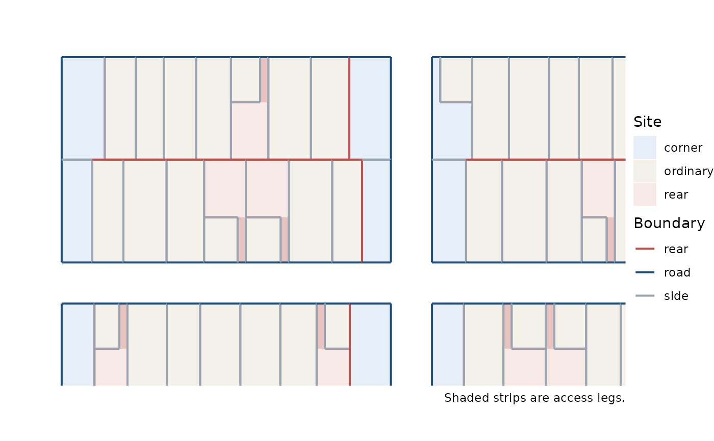

Check and draw how sites and boundaries were classified
Source:R/check_morphology.R
check_morphology.RdBefore trusting a run on a new jurisdiction's cadastre, look at what the
morphology helpers made of it. check_morphology() compares the shares of
each class with ranges typical of suburban cadastres and says which look
wrong (a corner-site share near a quarter, for instance, once revealed that
curved frontages were being read as two). plot_morphology() draws the
classification for an area so it can be checked by eye.
Arguments
- x
Prepared sites from
prepare_sites().- sites
Optional site ids to centre the view on.
- area
Optional
sfobject or bounding box to draw; defaults to thesitesgiven, or everything.- pad
Margin (m) around
sitesorarea.
Value
check_morphology(): a data frame of measure, value, the
plausible range and a status of "ok" or "check".
plot_morphology(): a ggplot.
Examples
town <- exampleton()
s <- prepare_sites(scenario("Operative", rulebook_example("exampleton"),
parcels = town$parcels[town$parcels$parcel_type == "land", ],
roads = town$parcels[town$parcels$parcel_type == "road", ],
zoning = town$zoning))
check_morphology(s)
#> Morphology check: 0 measures outside the usual range.
#> measure value usual status
#> sites with no road frontage 0.0% 0-5% ok
#> corner sites 21.4% 2-25% ok
#> through sites 0.7% 0-5% ok
#> rear sites 10.4% 0-30% ok
#> rear sites with an access leg 98.6% 30-100% ok
#> boundary length that is road frontage 19.7% 15-45% ok
#> boundary length that is rear 18.5% 10-35% ok
#> boundaries with no zone across 2.9% 0-5% ok
#> sites with no zone 0.0% 0-1% ok
#> sites split by a zone boundary 0.1% 0-5% ok
plot_morphology(s, sites = c("P00180", "P00200"), pad = 60)
